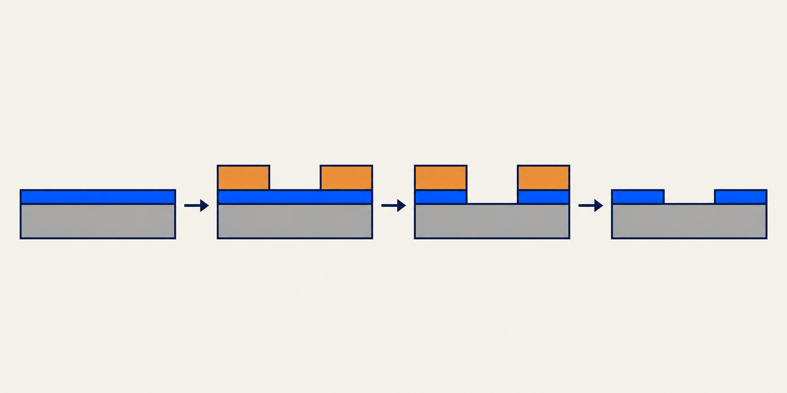
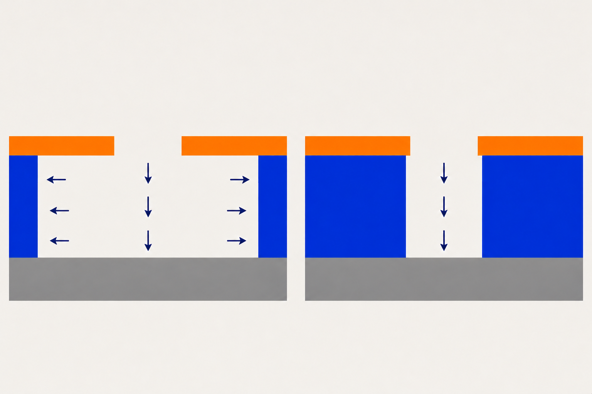

半導體製程入門
晶片上的微小結構 怎麼做出來？
薄膜、微影與蝕刻
補充說明
給沒有半導體背景的你。一段製程，一次看懂材料如何變成圖案。
先認識加工的對象
晶圓與晶片
製造元件的基底平台
晶圓上的個別電路區域
矽是半導體材料；摻雜 Doping 是加入少量特定雜質，調整導電特性。
補充說明
本教學聚焦表面加工。摻雜、熱處理、互連與其他步驟同樣重要，不會只靠一次蝕刻完成晶片。
先看每一步的任務
製程中的一段圖案轉移

這段加工會依設計搭配其他製程反覆使用。
補充說明
薄膜 Thin film 是表面的一層材料；微影 Lithography 利用感光的光阻 Photoresist 定義圖案；蝕刻 Etching 移除指定材料。這段流程省略清洗、烘烤、對準與量測，不能當作完整製造配方。
材料與位置決定用途
薄膜承擔不同功能
提供導電路徑
隔開不應直接導通的區域
形成所需的材料層
薄膜 Thin film 是表面的一層材料，可透過沉積或成長形成。
補充說明
沉積 Deposition 是把材料送到表面並形成材料層。形成薄膜後，還需依設計定義形狀與位置。
CVD 與 PVD
兩類沉積方式
| 方法 | 如何理解 |
|---|---|
| 化學氣相沉積 CVD | 以化學反應形成薄膜 |
| 物理氣相沉積 PVD | 以物理方式供應材料，包含蒸鍍、濺鍍 |
材料抵達表面後，還會移動並逐步形成薄膜。
補充說明
CVD：Chemical vapor deposition；PVD：Physical vapor deposition。蒸鍍 Evaporation 使來源材料汽化後到達表面；濺鍍 Sputtering 藉粒子轟擊使來源材料離開並沉積。薄膜品質仍受材料及製程條件影響。
微影 Lithography；光阻 Photoresist 是感光材料
微影先定義光阻圖案
曝光與顯影，讓光阻形成保護區與開口。
補充說明
曝光區最後留下或去除，取決於光阻類型。此處只說明功能，不把正負光阻的行為混成同一種。
兩次轉移，各有任務
蝕刻把圖案轉入材料
把設計圖案轉到光阻
把開口圖案轉到薄膜
蝕刻遮罩 Etch mask 保護不想移除的區域。
補充說明
蝕刻遮罩可用光阻、氧化物或氮化物構成。微影光罩 Photomask 定義曝光圖案，與保護材料表面的蝕刻遮罩不是同一物件。
快慢、方向與材料差異
蝕刻要分開看三件事
每分鐘移除多少厚度？
向下刻，還是也向旁邊刻？
目標與參照材料的移除速率比
選擇比高，不代表側壁一定垂直。

補充說明
方向性描述方向之間的差別；選擇比描述材料之間的差別。
假設算例，不是設備規格
選擇比的簡單計算
拖動膜厚，觀察需要的時間與光阻消耗。
蝕刻時間 2.0 分鐘
光阻消耗 10.0 nm
目標薄膜 100 nm/min，光阻 5 nm/min。
補充說明
假設速率恆定、表面均勻，未加入過蝕刻 Overetch：為確保各處刻穿而延長的蝕刻。實際條件改變時需重新評估。
分類不能取代條件
濕式與乾式蝕刻
| 方式 | 基本機制 | 注意 |
|---|---|---|
| 濕式 Wet etching | 液態藥液的化學作用 | 常見等向性，但有晶向例外 |
| 乾式 Dry etching | 可含物理、化學作用 | 不保證一定垂直蝕刻 |
選方法時，要同時看材料、形狀與損傷。
補充說明
等向性 Isotropy 指各方向移除速率相同。晶向 Crystal orientation 是晶體內原子排列的方向；矽的某些濕式蝕刻在不同晶向速率不同。乾式也可能以化學作用為主。
反應性離子蝕刻 Reactive ion etching
RIE 結合兩種作用
提供方向性的轟擊
參與材料表面的化學反應
電漿 Plasma 包含電子、離子與中性物種。
補充說明
反應性中性物種不等於帶電離子。RIE 的實際效果受氣體、材料、能量與其他條件影響。
平均自由程 Mean free path：兩次碰撞間的平均距離
真空讓氣體環境可控制
其他條件相近時，壓力降低，平均自由程增加。
補充說明
真空仍有氣體。壓力會影響碰撞與傳輸，但不能推論「壓力越低，薄膜品質一定越好」。
一個指標不夠
完成圖案，也要顧及品質
是否刻穿？
膜厚與速率有差異
是否傷到其他層？
檢查遮罩與下層消耗
是否一致？
比較不同位置的結果
過蝕刻可協助刻穿，卻會增加其他材料的損耗。
補充說明
實際製程還要考慮產物移除、均勻性與損傷。這份簡報只提供概念框架。
可以重選，答案附理由
三題，檢查你是否理解
1. 本教學中，誰把光阻開口轉移到薄膜？
2. 選擇比高，是否代表側壁一定垂直？
3. 所有濕式蝕刻都是等向性嗎？
補充說明
做錯時，從本頁的 Wiki 連結回顧概念。
五份來源，一份可追溯的 Wiki
閱讀與延伸
- S01 Vacuum Technology and film growth
- S02 Dry Etching
- S03 Etching（含課程回饋）
- S04 Microchip Fabrication, 4th edition
- S05 Silicon VLSI Technology: Fundamentals, Practice and Modeling
每頁下方都能回到 Wiki 與證據頁碼。
補充說明
三份講義為 2005 年教材，書籍用於基礎原理。厚書採章節選讀，這份簡報不代表最新製程現況。